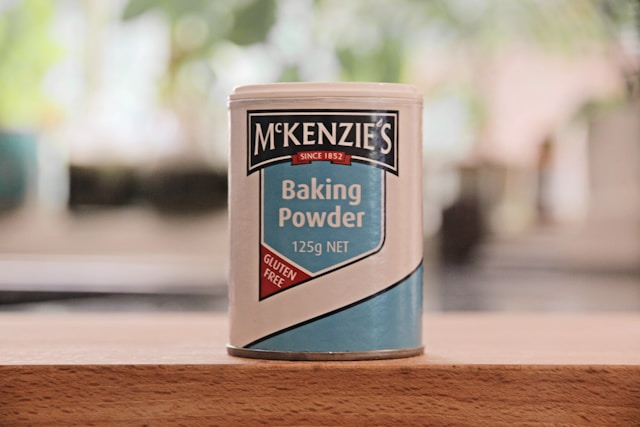
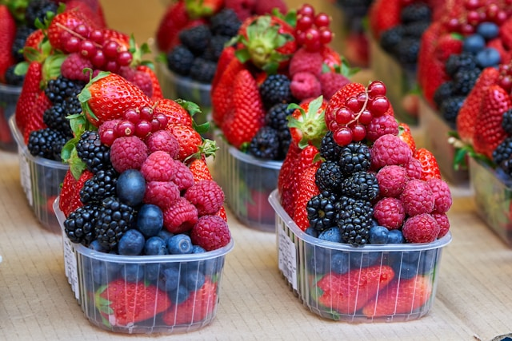

| 200 g bitter çikolata |
 |
200 g bitter çikolatayı ve 150 g tereyağını benmari usulü eritin. |
| 150 g tereyağı |
 |
3 adet yumurtayı ve 1 su bardağı toz şekeri bir kaba alıp iyice çırpın. |
| 3 adet yumurta |
 |
Erimiş çikolatayı ve tereyağını yumurta karışımına ekleyin ve karıştırın. |
| 1 su bardağı toz şeker |
 |
1 su bardağı un, 1 çay kaşığı kabartma tozunu ve bir tutam tuzu ekleyin ve karıştırın. |
| 1 su bardağı un |
 |
1 su bardağı orman meyvesini hamura ekleyin ve nazikçe karıştırın. |
| 1 çay kaşığı kabartma tozu |
 |
Hamuru yağlanmış kalıba dökün. |
| 1 su bardağı orman meyvesi karışımı |
 |
Önceden ısıtılmış 180°C fırında 25-30 dakika pişirin. |
| 1 çay kaşığı Vvanilya özü |
 |
Piştikten sonra kalıptan çıkarıp soğutun. |
| Bir tutam tuz |
 |
Soğuyan browniyi dilimleyerek servis yapın. |